Community Training Classes & Labs > F5 Lab Days - Azure Index
2.2.1. Task – Launch a SQL Injection attack against WordPress¶
The next task involves testing the application and checking for open vulnerabilities. You will need to access your WordPress instance and launch a simple SQL Injection attack.
Open a web browser and navigate to http://<WordPress-Public-IP>
Navigate to the Search box. You can do this via two methods:
- Scrolling down the page with the browser scroll bars
In the search box, enter the string
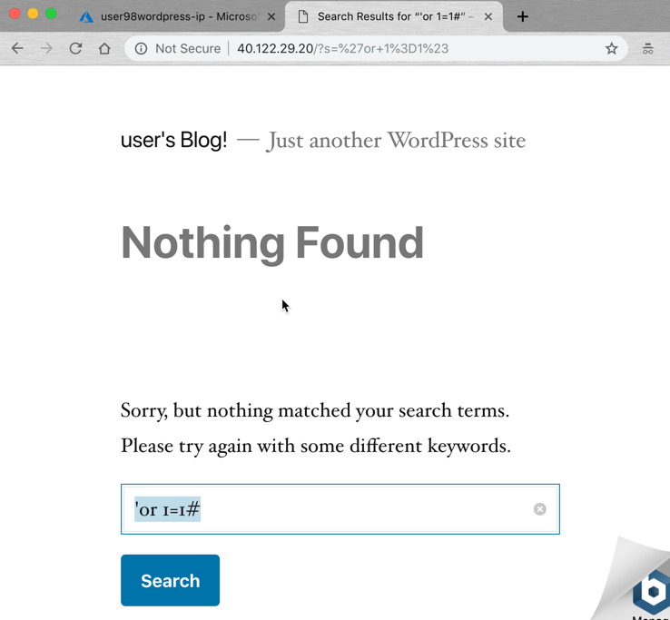'or 1=1#to launch the SQL Injection attack.Click Search
Perform this task several times to simulate an attack
Although the WordPress application does not respond with any records, there are in fact no safeguards against this SQL injection attack.
Note
'or 1=1#is an example of a simple SQL Injection attack. A SQL injection attack consists of insertion or “injection” of a SQL query via the input data from the client to the application. A successful SQL injection exploit can read sensitive data from the database, modify database data (Insert/Update/Delete), execute administration operations on the database (e.g. shutdown the DBMS), recover the content of a given file present on the DBMS file system, and in some cases issue commands to the operating system.
{kind=link}
{kind=link}
2.2.2. Task – Launch Azure Security Center and deploy the F5 WAF¶
Among other things, Azure Security Center (ASC) makes recommendations to optimize and secure your web applications. You will now follow the recommendation from ASC to deploy the F5 pre-configured WAF in front of your WordPress application.
Go back to the Microsoft Azure portal and navigate to Azure Security Center.
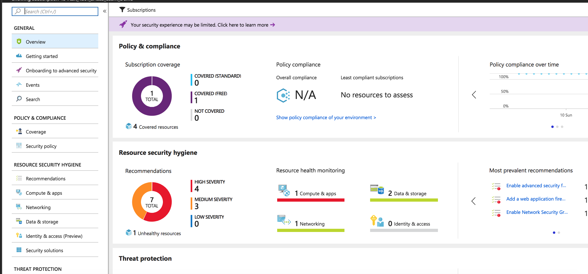Click on Security Center -> Welcome
Click Launch Security Center and notice that ASC has recommendations for your environment
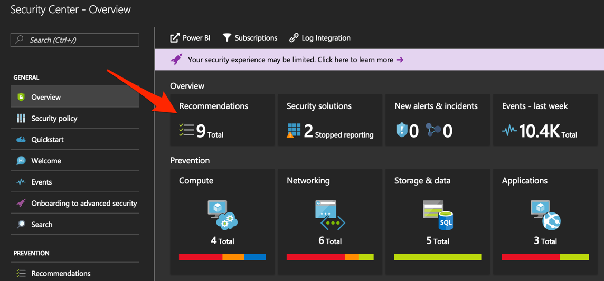Click on Recommendations
Tip
Recommendations are created by the Azure Security Center to make your applications more secure. One of the recommendations is to Add a web application firewall.
In the “Recommendations” page, select the Add a web application firewall
Click on the name of the application to the right of the screen
Example: student##-wp in the screenshot below
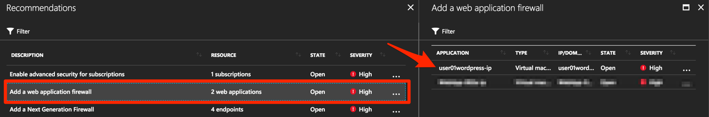Note
If the name of your WordPress does not appear, please wait a few minutes until Azure Security Center can create the Recommendations.
Click on Create New
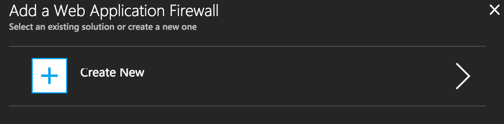Select F5 WAF Solution - BYOL
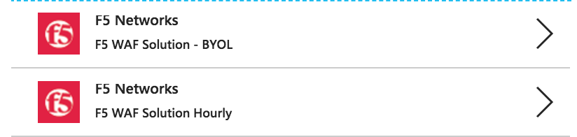Click Create
Use the information in Table 2.5 to complete the “Basics” page during this deployment. Leave all other settings as default.
Table 2.5
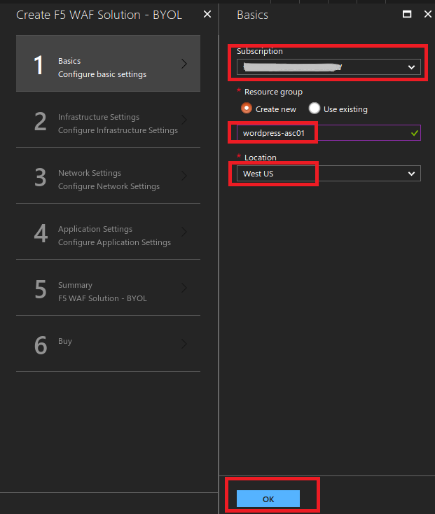Key Value Subscription <User Unique> Resource Group Create new: wordpress-acs<student number> Location <User Unique> Click OK
Use the information in Table 2.6 to complete the “Insfrastructure Settings” page during this deployment. Leave all other options as default.
Table 2.6
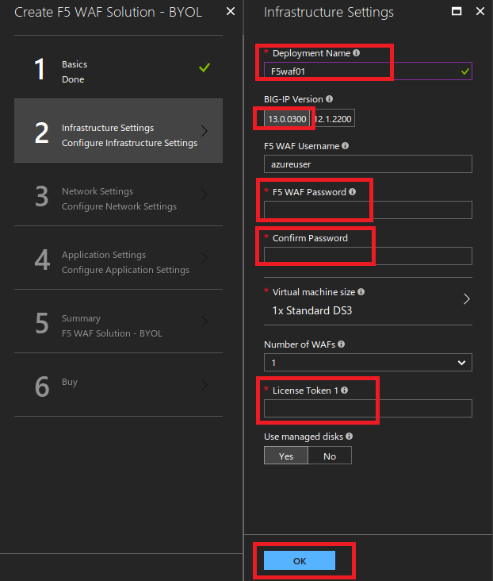Key Value Deployment Name student##-waf BIG-IP Version Choose latest 13x available F5 WAF Password ChangeMeNow123 Confirm Password ChangeMeNow123 Click OK
Use the information in Table 2.7 to complete the “Network Settings” page during this deployment. Leave all other options as default.
Table 2.7
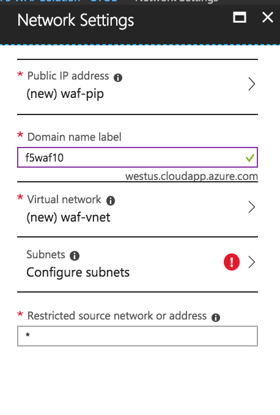Key Value Domain name label student##-waf Subnets You’ll need to hit Configure Subnets Select Configure Subnets Use the information in Table 2.8 to complete the “Network Settings” page during this deployment. Leave all other options as default.
Table 2.8
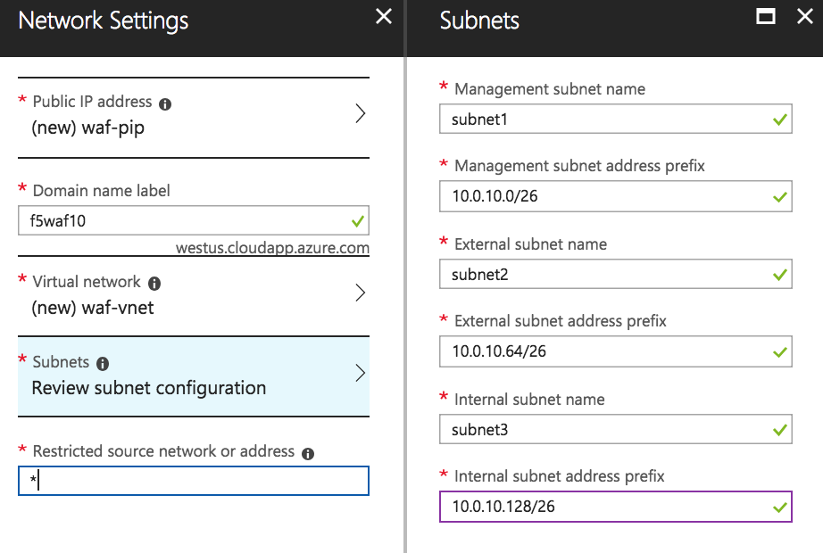Key Value Management Subnet 10.0.0.0/26 External Subnet 10.0.0.64/26 Internal Subnet 10.0.0.128/26 Note
This will create a 3-nic F5 instance.
Click OK
Use the information in Table 2.9 to complete the “Application Settings” page during this deployment. Leave all other options as default.
Table 2.9
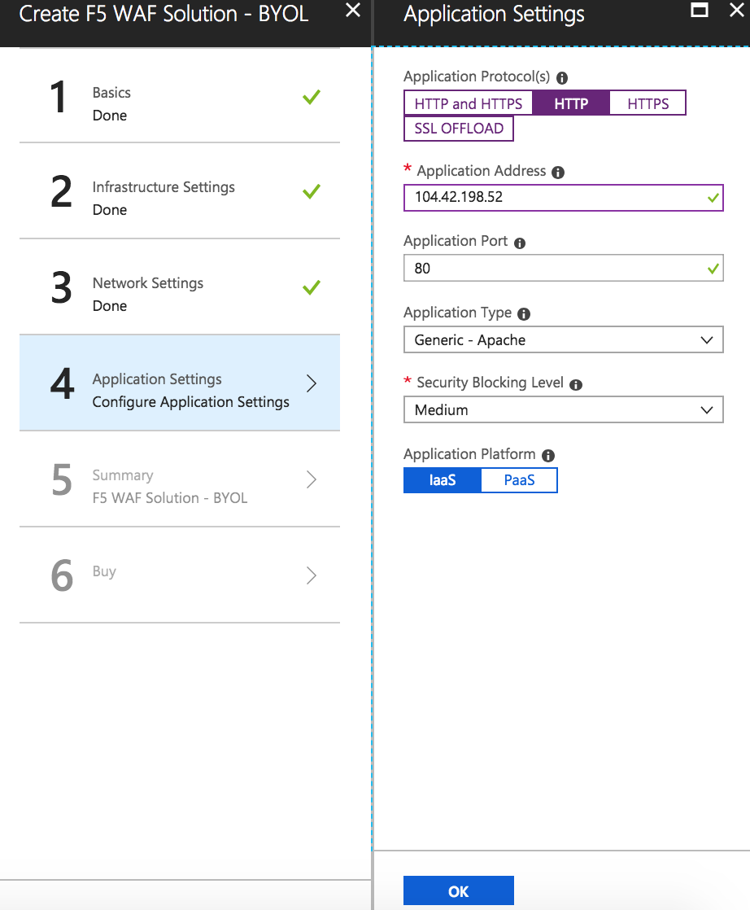Key Value Application Protocol(s) HTTP Application Address <wordpress-public-IP> Click OK to proceed to the next page
Review the “Summary Page”. You should receive Validation passed
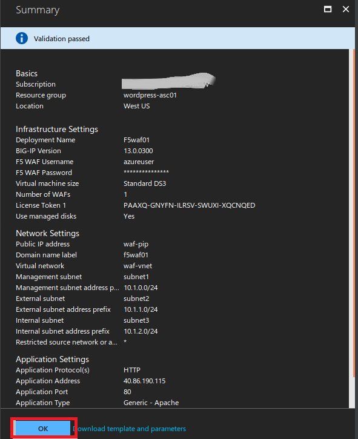Click OK to proceed to the next page
Review the “Terms and use” page
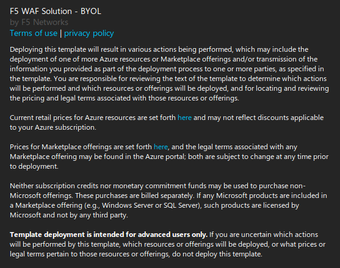Scroll down to review the remaining “Terms and use” page
Supply your email and phone number for validation
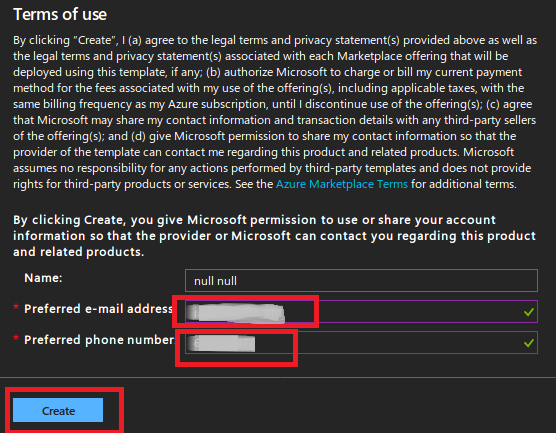Click Create
Note
Deployment time can take up to 30 minutes.
{kind=link}
{kind=link}
{kind=link}
{kind=link}
{kind=link}
{kind=link}
{kind=link}
{kind=link}
{kind=link}
{kind=link}
2.2.3. Task – Review F5 WAF Configurations and Policies¶
Take this time to review the various components that are automatically provisioned as part of the Azure Security Center.
Click on the Resource Group that deployed the F5 WAF
Hint
It will be named student-asc…
Click on Public IP address for the F5 device
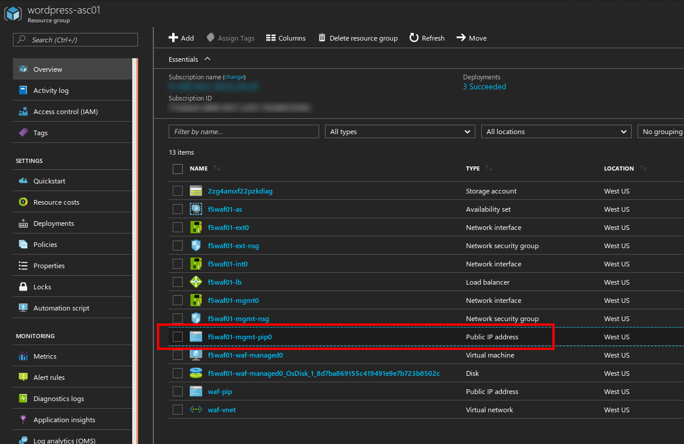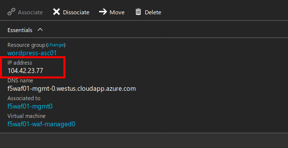Note
Remember the F5 public IP address. This will be used in subsequent steps.
Open a web browser and go to the BIG-IP GUI at https://<F5-Public-IP> to see when the platform completes the deployment
Login as admin (or azureuser) and use the password you entered during the WAF deployment process.
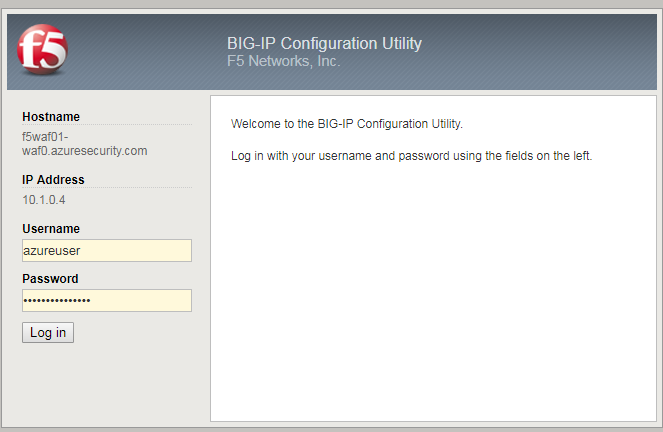Warning
The deployment takes time. If you observe it from the GUI, you will see a reboot. This automated background deployment (licensing, creating the pool and virtual server) may take 10 minutes or longer. Please be patient and do not interrupt this process. Once the Virtual Server is created, the setup of F5 WAF is complete.
Review the F5 configurations by first going to LTM -> Virtual Servers
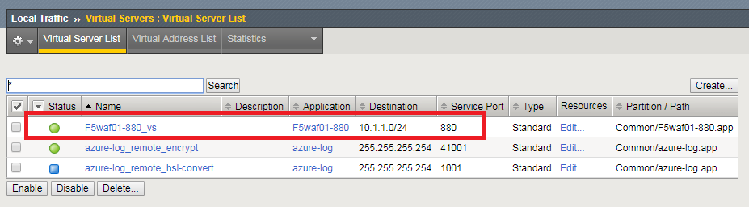Notice that the Azure Security Center WAF deployment automatically created the required virtual server
Select the virtual server to view properties
Review the various settings on the “Properties” tab
Then select the “Resources” tab
Notice the pool has been automatically created and added
Also notice the Policies section has a Local Traffic Policy assigned. This will direct traffic of interest to the WAF policy on the F5.
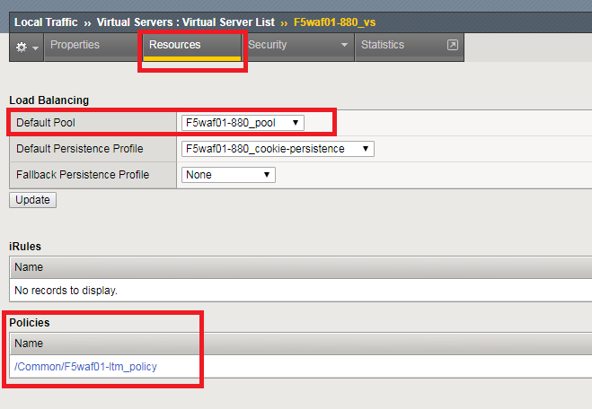Review the LTM -> Pools
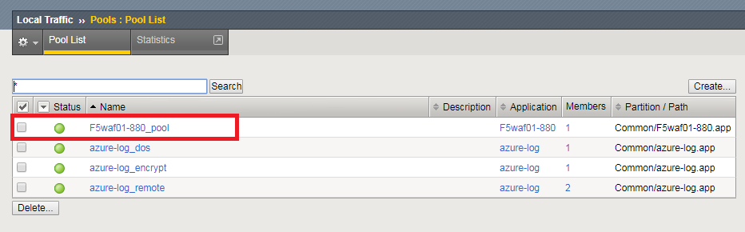Note
This pool contains the public IP address of the WordPress server you initially created in the earlier section of this lab.
Notice that the Azure Security Center WAF deployment automatically created the required pools
Hint
If you look more closely, you’ll realize that the Azure Security Center actually deployed the F5 base provisioning, downloaded the WAF policy, and then ran a declarative call to automate the provisioning of all required F5 L4-L7 services using F5 iApps.
Time permitting, go explore the iApps in the F5 GUI under iApps -> Application Services. You can also review the F5 Application Security Manager (ASM = WAF) section under Security -> Application Security.
{kind=link}
{kind=link}
{kind=link}
2.2.4. Task – Demonstrate F5 WAF blocking functionality¶
As part of the WAF deployment, a new F5 VIP (virtual IP/listener) has been configured for the WordPress application that sits behind an Azure NAT rule. Additionally, a base WAF policy has been configured automaticaly for the application. To test the WAF policy, you will repeat the SQL injection attack from a previous lab against the WordPress application. However this time you will access the WordPress application through the F5 protected WAF policy.
First, you need to identify the public IP address for the Azure load balancer.
Click on the Resource Group that deployed the F5 WAF
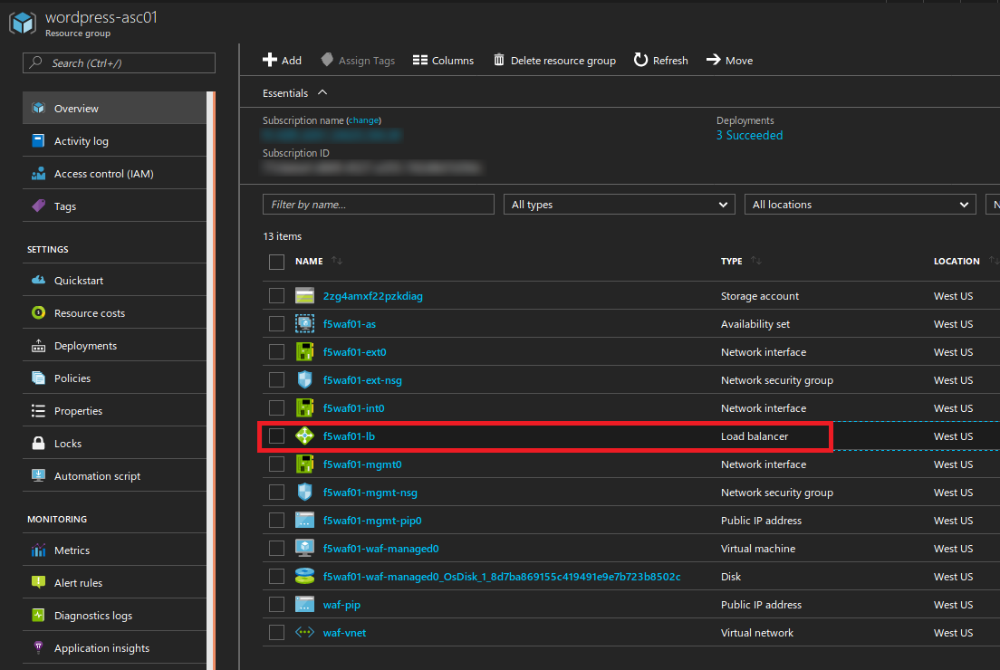Hint
It will be named wordpress-asc…
Copy the Public IP address for the Azure load balancer device
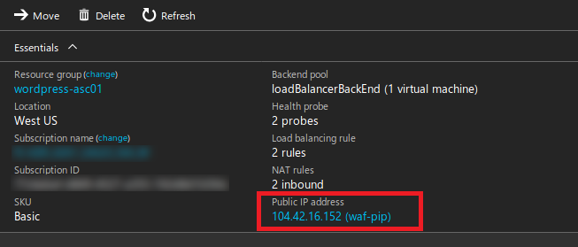Note
Remember the Azure LB public IP address. This will be used in subsequent steps.
Open a web browser and go to http://<azure-lb-public-ip>
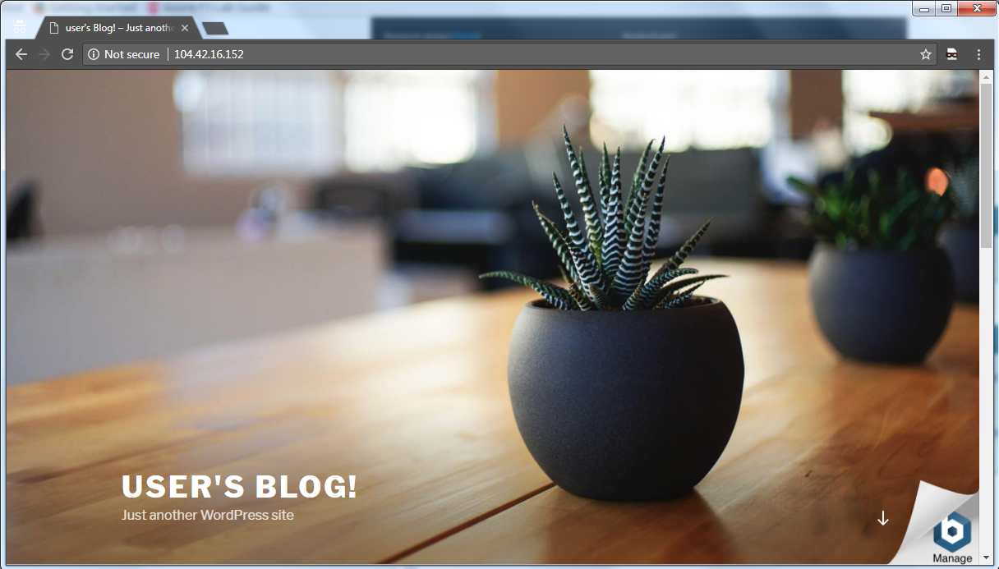Note
The Azure NATs found within the Azure load balancer (ALB) control the NAT decisions. This allows proper traffic direction depending on if it is F5 management traffic or client/server traffic.
If you want to explore the Azure load balancer NAT and load balancer rules, then stay on the Load Balancer page and review the various settings. Now would be a good time to raise hands for any questions.
Let’s proceed with an attack through the F5!
Navigate to the Search box. You can do this via two methods:
- Scrolling down the page with the browser scroll bars
- Or…
- Click the X in the lower right corner of the screen
- Close the Manage link
- Click the arrow in bottom right corner of the screen
In the search box, enter the string
'or 1=1#to launch the SQL Injection attack.Hit Enter
Perform this task several times to simulate an attack. Notice that the F5 BIG-IP WAF policy is now protecting the WordPress application from this SQL injection attack.
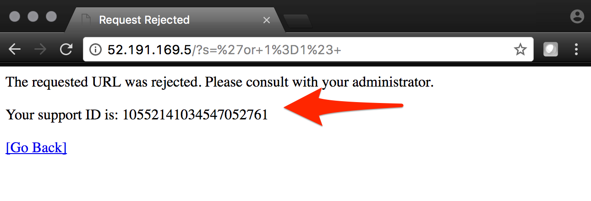Open another web browser and go to the BIG-IP GUI at https://<F5-public-IP>
Go to Security -> Event Logs -> Application -> Requests
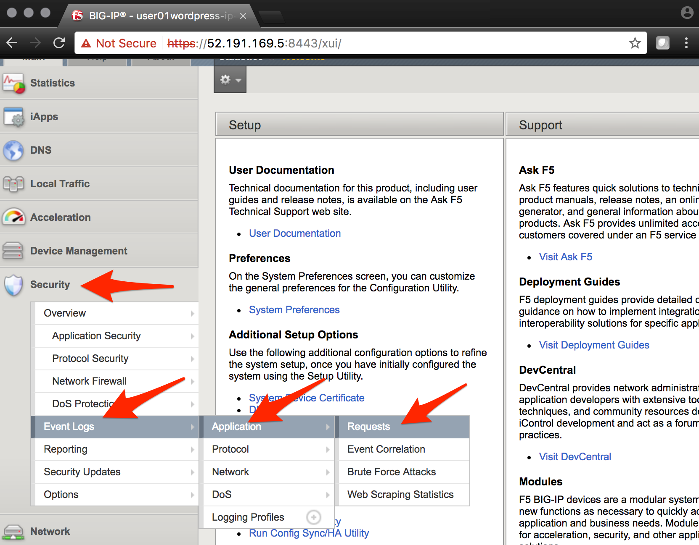Click on the line with the highest “Violation Rating” link to view full request information
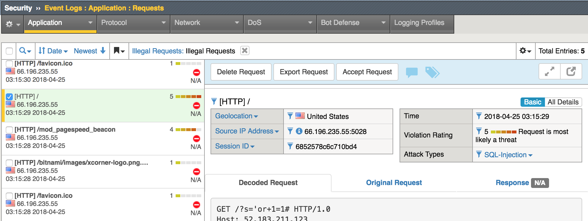Click on Attack signature detected to see details
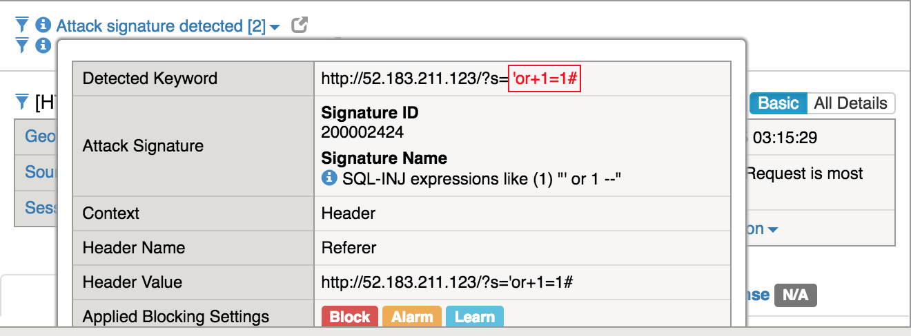Note
The F5 WAF has successfully detected the SQL injection attack and protect the WordPress application.
{kind=link}
{kind=link}
{kind=link}
{kind=link}
2.2.5. Task – Finalize the WAF Deployment¶
Now that you have successfully tested the path to WordPress through the F5 BIG-IP, you need to finalize the WAF deployment. Currently access still works direct to the WordPress application via public IP address http://<wordpress-public-IP> as demonstrated in Task 1 of this lab. Finalizing the WAF deployment will eliminate the ability to access the WordPress application directly. Access to the WordPress application will only be available through the F5 BIG-IP.
Go back to the Microsoft Azure portal and navigate to Azure Security Center
Click on Security Center -> Overview
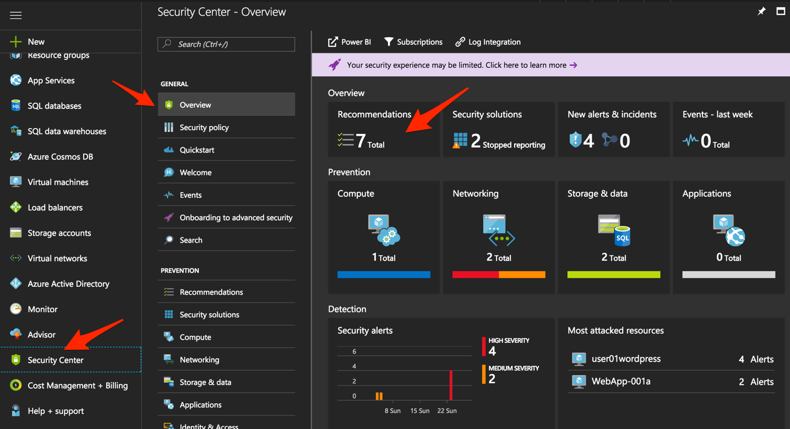Click Recommendations
Select Finalize web application firewall setup
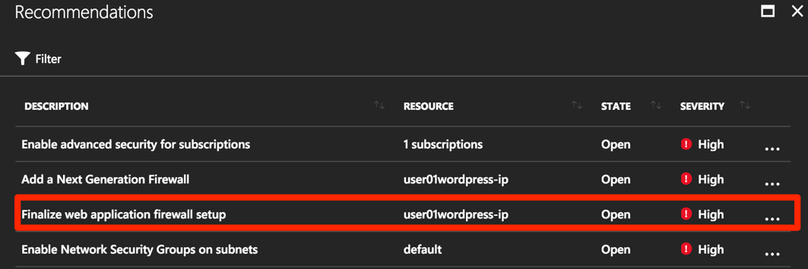Click on the WordPress application
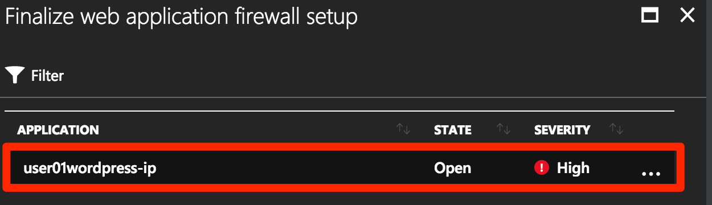You will be presented a message stating to complete the remaining tasks via the Solutions Center.
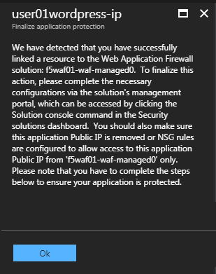Click OK
Go back to Azure Security Center and select Security solutions
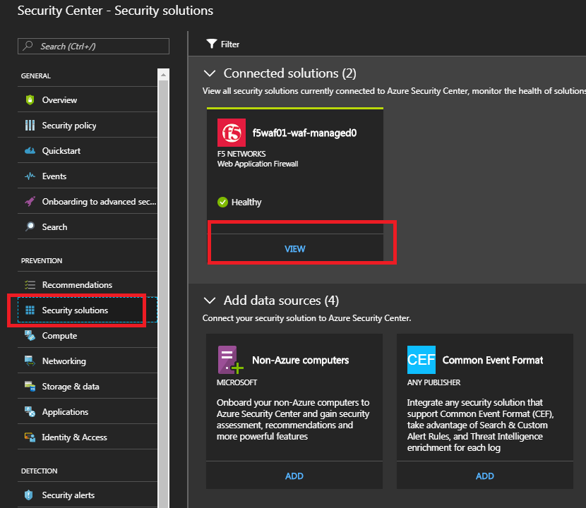In the “Connected solutions”, choose your WAF by selecting View
On the next screen, select your WAF instance and then choose Finalize application protection
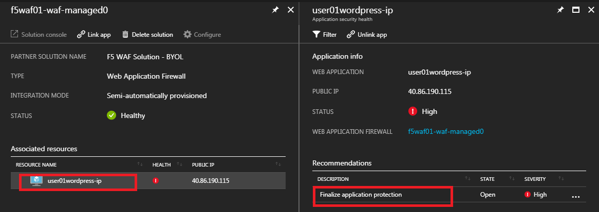On the “Finalize application protection” screen, select your WAF instance
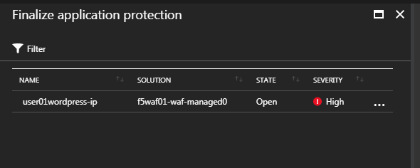Read the message and perform the necessary actions
Hint
At this point, you need to take some type of action outside of Azure Security Center. In this case, you need to update the WordPress instance’s network security group to restrict the inbound HTTP/HTTPS access to only the F5 (if doing single 1-nic) deployment or the Azure LB public IP (if doing multiple-nic deployment).
Now is a good time to raise your hand with questions.
When done, refresh the Security solutions page again
Notice the health of the solution is now green
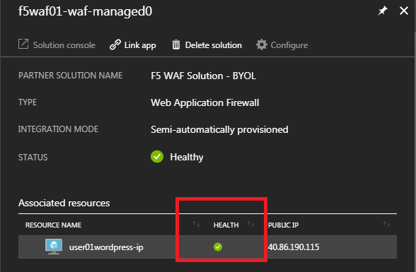Note
If the health status is still red, then please review the NSG linked to the WordPress instance. Come back to the Solutions center and finalize the WAF again.
Also, after some time the solution will disappear once there is no more action to take. This is a good sign that the finalization tasks are complete.
Once all actions are perfomed (e.g. lock down NSG), then go back to Azure Security Center
View Recommendations again and notice that “Finalize application protection” for your WAF instance is marked as Resolved
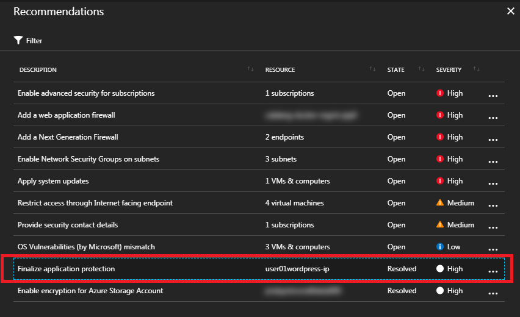Open a web browser and go to http://<wordpress-public-IP>
Notice that the page no longer loads
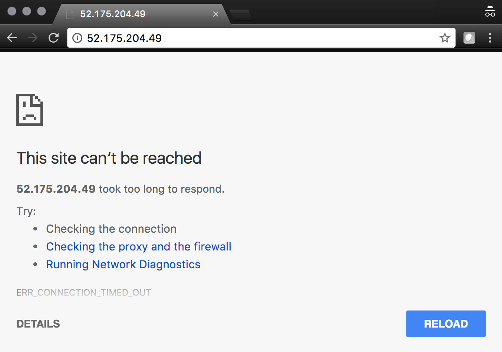Sanity check…test access via the F5 WAF again and go to http://<F5-public-IP>

Attention
Testing WordPress by going through the F5 should successfully load. Testing WordPress IP directly should fail.
{kind=link}
{kind=link}
{kind=link}
{kind=link}
2.2.6. Task – Lab 2 Teardown¶
Please revoke BIG-IP license for reuse in next lab then delete lab resource group.
Revoke BIG-IP license for resuse in next lab.
- From BIG-IP GUI select System -> License then select revoke.
Delete resource group wordpress and wordpress-acs<student number> created earlier in this lab.
- From Azure Portal select Resource Group
- Select … on right side of the resource group created earlier
- Select delete. You will be prompted to enter resource again for confirmation.
Enter resource group name when prompted for resource group to be deleted.

This concludes Lab 2